heatmap_layout() utilizes the grammar of graphics to
construct the heatmap and heatmap annotations. You can also use the
alias ggheatmap().
Input data
The data input can be a numeric or character vector, a data frame, and any other data which can be converted into a matrix.
set.seed(123)
small_mat <- matrix(rnorm(81), nrow = 9)
rownames(small_mat) <- paste0("row", seq_len(nrow(small_mat)))
colnames(small_mat) <- paste0("column", seq_len(ncol(small_mat)))
ggheatmap(small_mat)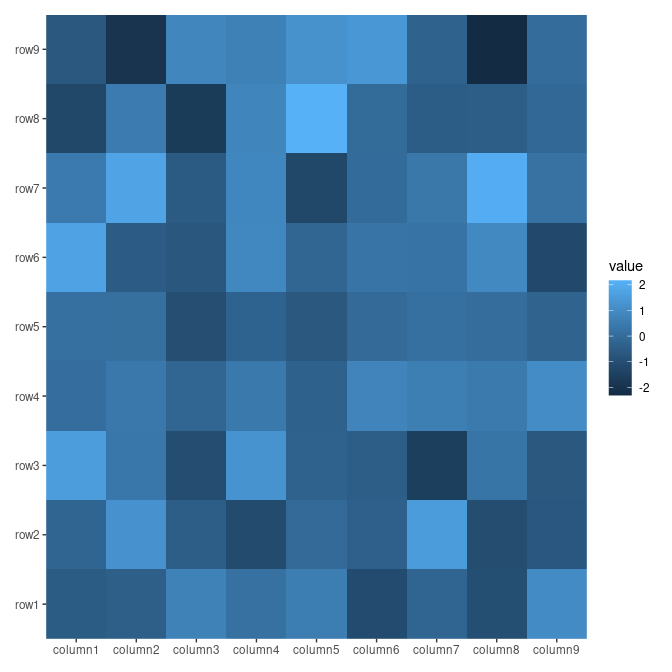
Heatmap body
For ggplot2 usage, the matrix input will be converted
into a long formated data frame when drawing. The default mapping will
use aes(.data$.x, .data$.y), but can be controlled using
mapping argument. The data in the underlying ggplot object
contains following columns:
.xpaneland.ypanel: the column and row panel.xand.y: thexandycoordinates.row_namesand.column_names: A factor of the row and column names of the original matrix (only applicable when names exist)..row_indexand.column_index: the row and column index of the original matrix.value: the actual matrix value.
You can treat the heatmap_layout() object as a normal
ggplot2 object with a default mapping and
data. You can add ggplot2 elements as
usual.
ggheatmap(small_mat) + geom_point() + scale_fill_viridis_c()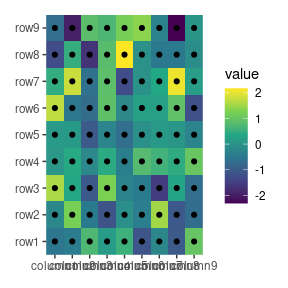
By default, we’ll add the heatmap layer. If you set
filling = FALSE, a blank heamtap will be drawn.
ggheatmap(small_mat, filling = FALSE)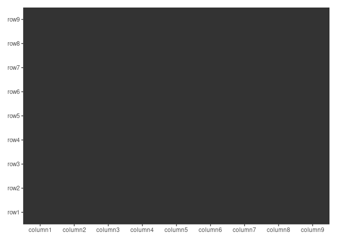
Heatmap annotations
Heatmap annotations provide additional information for the rows or
columns of the heatmap and can be placed at the top,
left, bottom, or right. An
annotation is a stack_layout() object internally, capable
of holding multiple plots.
By default, ggheatmap() does not initialize an active
context, so all additions are placed within the heatmap body. You can
use hmanno() to set the active context, directing all
subsequent additions to this position. The active context allows for
custom layout adjustments and the addition of various plot types.
In the following example, align_kmeans() is used to
group the columns into 3 panels. It doesn’t matter if this is added to
the top or bottom since it won’t add a plot area:
ggheatmap(small_mat) +
hmanno("t") +
align_kmeans(3L)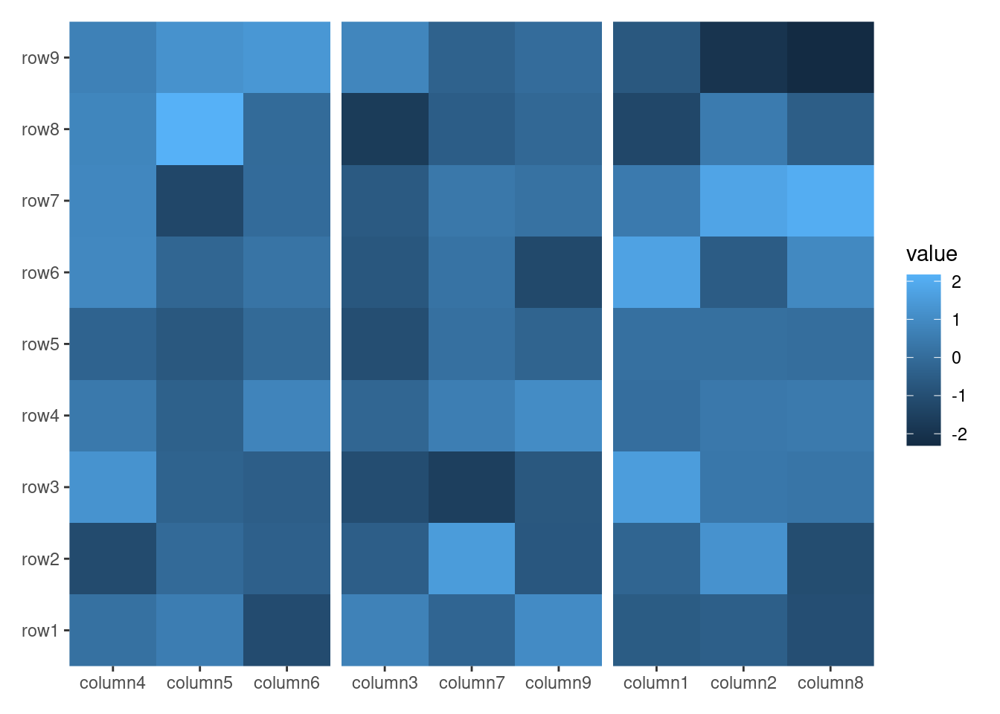
We can add any align_*() function to the annotation. For
more details on align_*() functions, refer to
vignette("layout-customize") and
vignette("layout-plot").
ggheatmap(small_mat) +
theme(axis.text.x = element_text(angle = -60, hjust = 0)) +
hmanno("r") +
align_dendro(k = 3L) +
geom_point(aes(color = factor(branch)))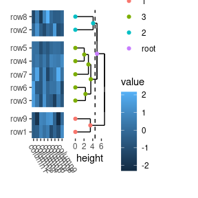
In this example:
-
hmanno("r")change the active context to the right of the heatmap. -
align_dendro(k = 3L)adds a dendrogram to this right-side annotation context and sets itself as the active plot in the annotation stack. -
geom_point(aes(color = factor(branch)))is then added to this active plot within the annotation stack.
Control size
You can specify the heatmap body sizes
(width/height) using the
ggheatmap() function. Alternatively, the
hmanno() function allows you to control the heatmap body
sizes, and it can also set the overall size of the annotation stack.
-
when
positionisNULL: we can usewidthandheightarguments to control the relative (you can also provide a unit object) width and height of the heatmap body. -
when
positionis notNULL: we can usesizeargument to control the relative width (left and right annotation) or height (top and bottom annotation) of the whole annotation stack.
ggheatmap(small_mat, height = 1) +
scale_fill_viridis_c() +
hmanno("t", size = 2) +
align_dendro() +
ggalign(data = rowSums) +
geom_bar(aes(y = value, fill = .x), stat = "identity")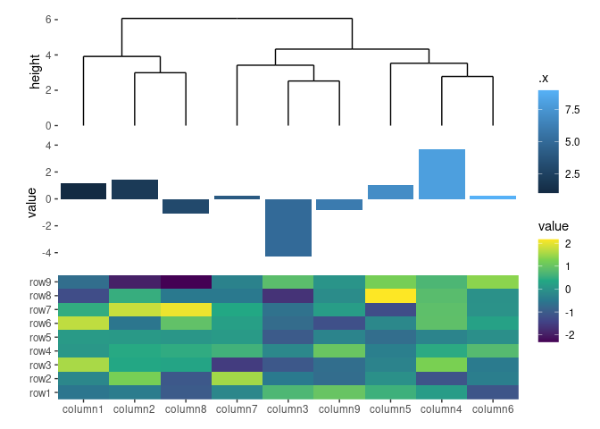
ggheatmap(small_mat) +
scale_fill_viridis_c() +
hmanno("t", size = 1) +
align_dendro() +
ggalign(data = rowSums) +
geom_bar(aes(y = value, fill = .x), stat = "identity")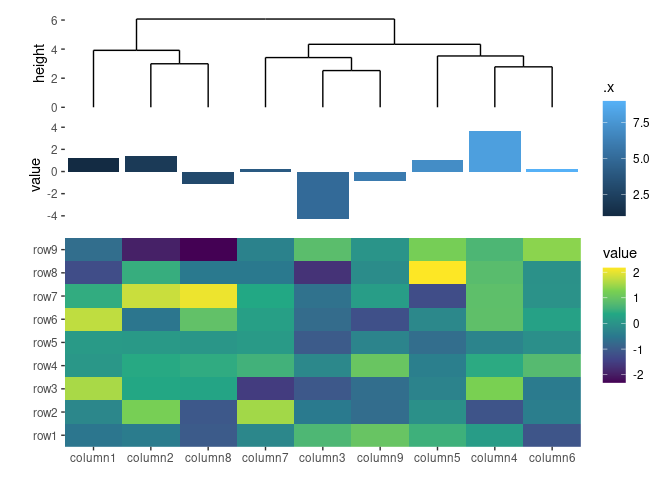
We can use unit() to define the size.
ggheatmap(small_mat) +
scale_fill_viridis_c() +
hmanno("t", size = unit(30, "mm")) +
align_dendro() +
ggalign(data = rowSums) +
geom_bar(aes(y = value, fill = .x), stat = "identity")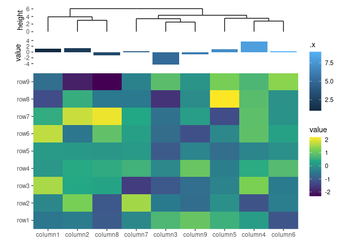
Some align_*() functions has a size
argument to control the relative width (left and right annotation) or
height (top and bottom annotation) of the single plot in the whole
annotation stack.
ggheatmap(small_mat) +
scale_fill_viridis_c() +
hmanno("l", size = 0.2) +
ggalign(data = rowSums, aes(x = value), size = unit(10, "mm")) +
geom_bar(
aes(y = .y, fill = factor(.y)),
stat = "identity",
orientation = "y"
) +
scale_fill_brewer(palette = "Set1", guide = "none") +
scale_x_reverse()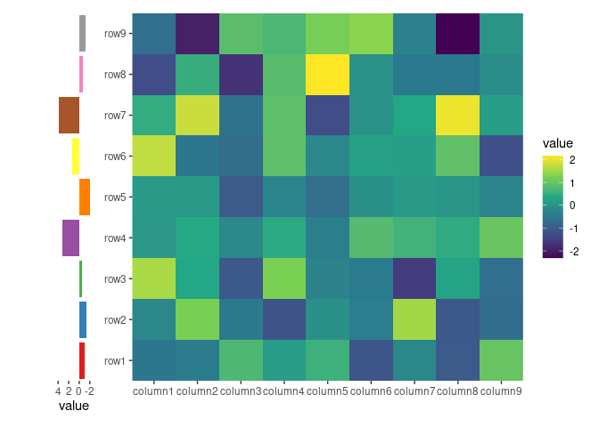
Alignment of axis titles
By default, ggheatmap() won’t align the axis titles.
ggheatmap(small_mat) +
scale_fill_viridis_c() +
ylab("Heatmap title") +
hmanno("t", size = unit(30, "mm")) +
align_dendro() +
ylab("Annotation title")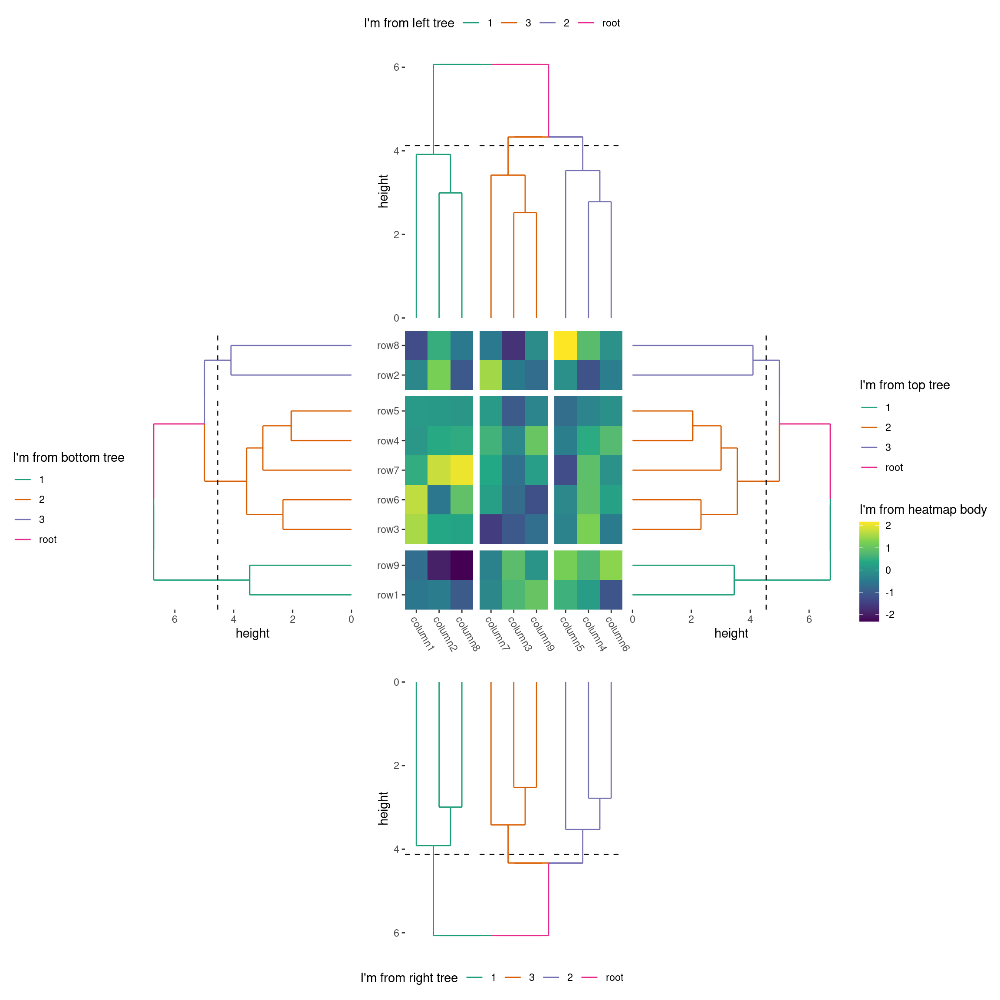
To align all axis titles, you can set free_labs = NULL
in the hmanno() function. Alternatively, A boolean value or
a single string containing one or more of axis positions (“t”, “l”, “b”,
“r”) to indicate which axis titles should be free from alignment.
-
when
positionisNULL: Thefree_labsargument controls the alignment of the heatmap body’s axis titles. If set towaiver(), it will inherit from the parent layout. -
when
positionis notNULL: Thefree_labsargument controls the alignment of the annotation stack’s axis titles. If set towaiver(), it will inherit from the specific heatmap layout axis:- For top and bottom annotations, it inherits from the left (“l”) and right (“r”) axes.
- For left and right annotations, it inherits from the top (“t”) and bottom (“b”) axes.
ggheatmap(small_mat) +
hmanno(free_labs = NULL) +
scale_fill_viridis_c() +
ylab("Heatmap title") +
hmanno("t", size = unit(30, "mm")) +
align_dendro() +
ylab("Annotation title")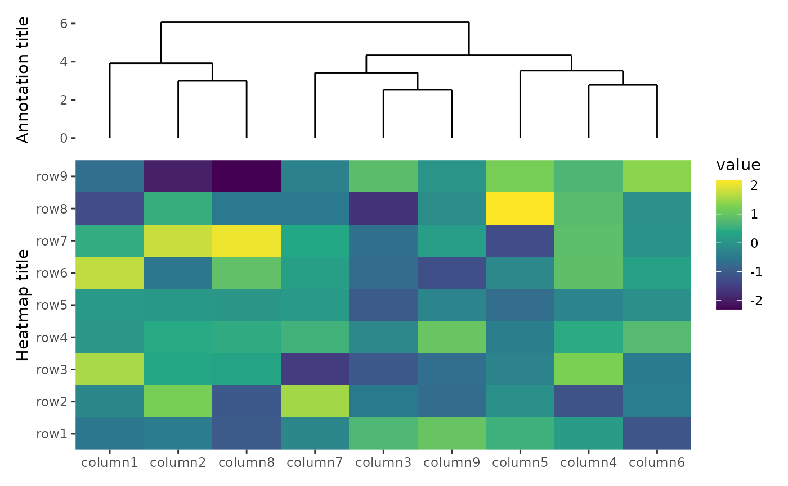
align_*() functions include the free_labs
argument, which, by default, inherits from the annotatioon stack. This
allows you to control the alignment for each plot individually.
ggheatmap(small_mat) +
hmanno(free_labs = NULL) +
scale_fill_viridis_c() +
ylab("Heatmap title") +
hmanno("t", size = unit(30, "mm"), free_labs = "l") +
align_dendro() +
ylab("Annotation title")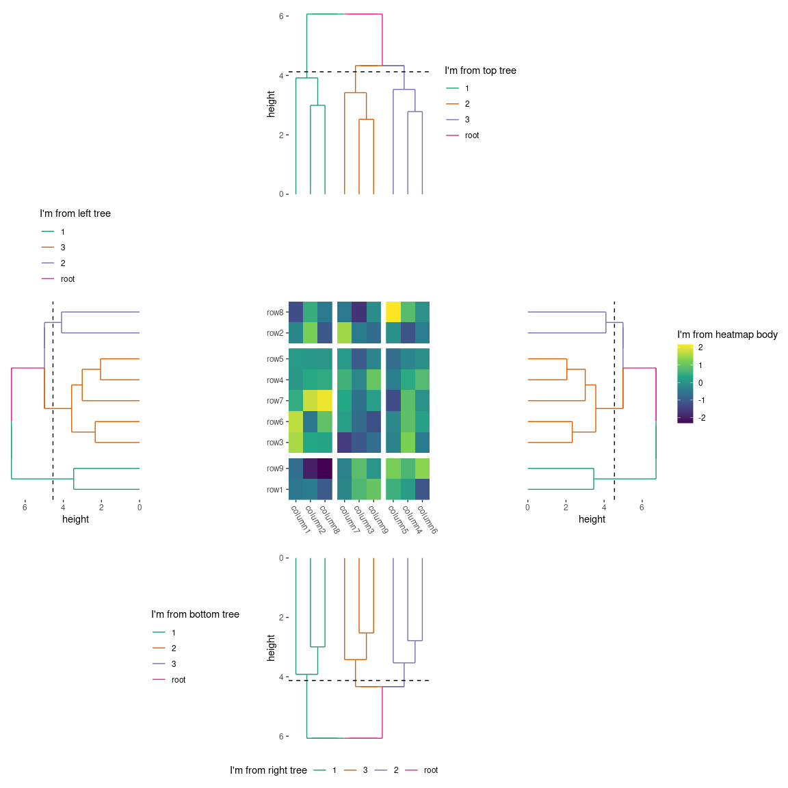
Removing spaces when aligning elements
By default, we’ll align all elements of the plot, which can sometimes lead to unwanted spacing. Consider the following example:
ggheatmap(small_mat) +
scale_fill_viridis_c() +
hmanno("t", size = unit(30, "mm")) +
align_dendro() +
scale_y_continuous(
expand = expansion(),
labels = ~ paste("very very long labels", .x)
) +
hmanno("l") +
align_dendro() +
scale_x_reverse(expand = expansion())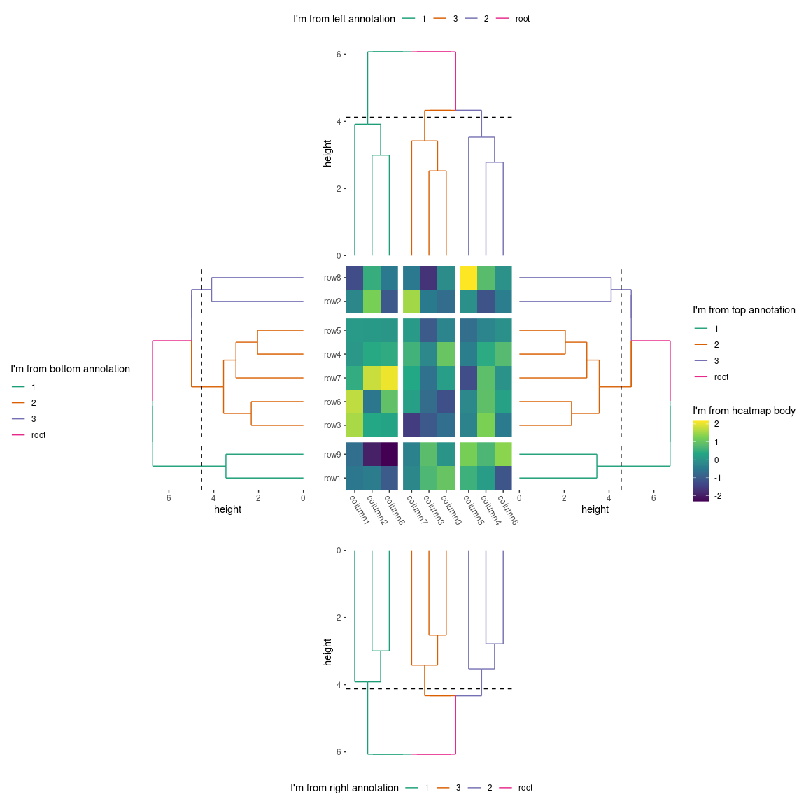
In this case, the left annotation stack is positioned far from the
heatmap body due to the wide axis labels in the top annotation stack.
This occurs because the top annotation stack is aligned with the heatmap
body. To fix this, you can remove the left borders around the panel of
the top annotation stack by setting free_spaces = "l".
ggheatmap(small_mat) +
scale_fill_viridis_c() +
hmanno("t", size = unit(30, "mm"), free_spaces = "l") +
align_dendro() +
scale_y_continuous(
expand = expansion(),
labels = ~ paste("very very long labels", .x)
) +
hmanno("l") +
align_dendro() +
scale_x_reverse(expand = expansion())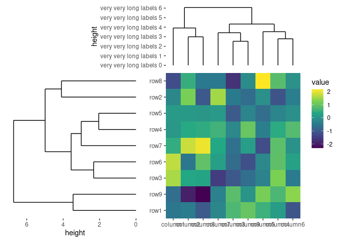
The same with free_labs argument, you can control the
free_spaces argument for the individual plot in
align_*() function.
Session information
sessionInfo()
#> R version 4.4.1 (2024-06-14)
#> Platform: x86_64-pc-linux-gnu
#> Running under: Ubuntu 22.04.5 LTS
#>
#> Matrix products: default
#> BLAS: /usr/lib/x86_64-linux-gnu/openblas-pthread/libblas.so.3
#> LAPACK: /usr/lib/x86_64-linux-gnu/openblas-pthread/libopenblasp-r0.3.20.so; LAPACK version 3.10.0
#>
#> locale:
#> [1] LC_CTYPE=C.UTF-8 LC_NUMERIC=C LC_TIME=C.UTF-8
#> [4] LC_COLLATE=C.UTF-8 LC_MONETARY=C.UTF-8 LC_MESSAGES=C.UTF-8
#> [7] LC_PAPER=C.UTF-8 LC_NAME=C LC_ADDRESS=C
#> [10] LC_TELEPHONE=C LC_MEASUREMENT=C.UTF-8 LC_IDENTIFICATION=C
#>
#> time zone: UTC
#> tzcode source: system (glibc)
#>
#> attached base packages:
#> [1] stats graphics grDevices utils datasets methods base
#>
#> other attached packages:
#> [1] ggalign_0.0.4 ggplot2_3.5.1
#>
#> loaded via a namespace (and not attached):
#> [1] gtable_0.3.5 jsonlite_1.8.9 highr_0.11 dplyr_1.1.4
#> [5] compiler_4.4.1 tidyselect_1.2.1 tidyr_1.3.1 jquerylib_0.1.4
#> [9] systemfonts_1.1.0 scales_1.3.0 textshaping_0.4.0 ggh4x_0.2.8
#> [13] yaml_2.3.10 fastmap_1.2.0 R6_2.5.1 labeling_0.4.3
#> [17] generics_0.1.3 knitr_1.48 tibble_3.2.1 desc_1.4.3
#> [21] munsell_0.5.1 RColorBrewer_1.1-3 bslib_0.8.0 pillar_1.9.0
#> [25] rlang_1.1.4 utf8_1.2.4 cachem_1.1.0 xfun_0.47
#> [29] fs_1.6.4 sass_0.4.9 viridisLite_0.4.2 cli_3.6.3
#> [33] pkgdown_2.1.1 withr_3.0.1 magrittr_2.0.3 digest_0.6.37
#> [37] grid_4.4.1 lifecycle_1.0.4 vctrs_0.6.5 evaluate_1.0.0
#> [41] glue_1.7.0 farver_2.1.2 ragg_1.3.3 fansi_1.0.6
#> [45] colorspace_2.1-1 rmarkdown_2.28 purrr_1.0.2 tools_4.4.1
#> [49] pkgconfig_2.0.3 htmltools_0.5.8.1